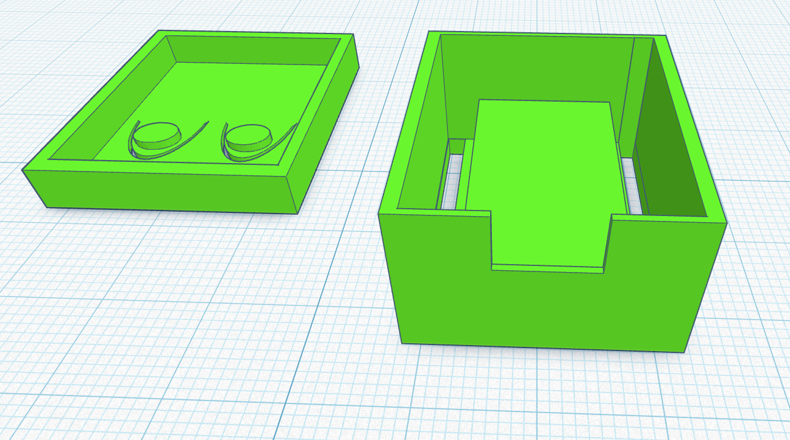
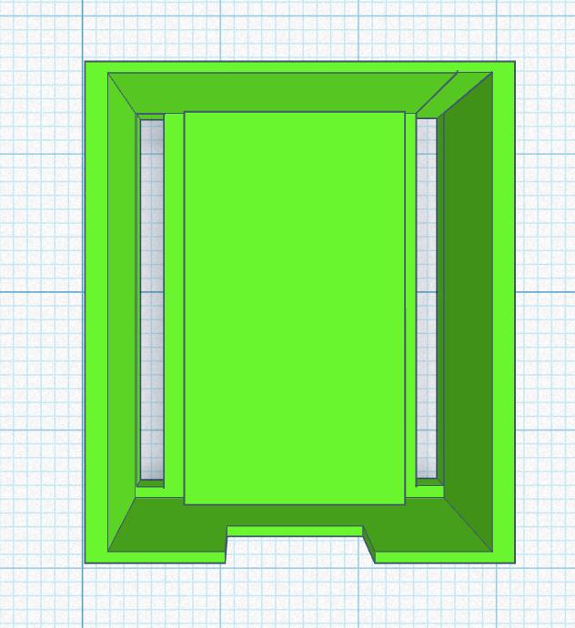
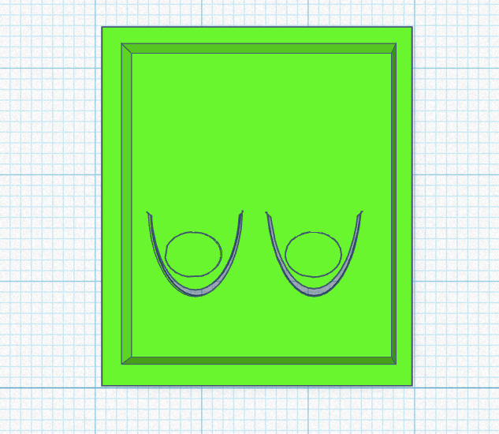

Prototype 1 was the first physical version of the ESP32-C3 case. The primary goal of this design was to test the overall dimensions, component placement, and basic enclosure structure. The prototype successfully housed the ESP32-C3 board and provided protection for the electronics while maintaining access to important ports.
During testing, it became clear that the lid did not fit correctly onto the main body of the case. The tolerances between the lid and enclosure walls were too tight, making assembly difficult and preventing the lid from sitting flush with the case. This issue highlighted the need for more accurate measurements and additional clearance in future designs.
Feedback from this prototype was used to improve the next iteration, leading to better fitment, easier assembly, and a more professional final design.


